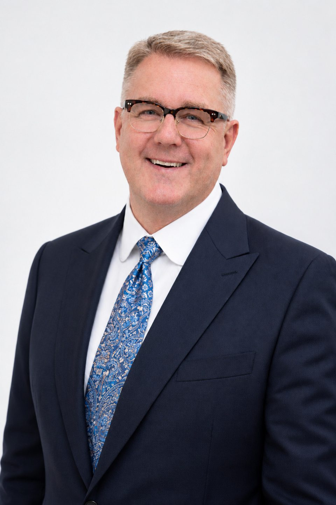

Разбор одной задачи
Короткая рабочая сессия по конкретному решению: выбираем инструмент и собираем его первый вариант.
Форматы и модули →Олег Омельченко · управленческая практика
Помогаю собственникам и командам пищевых и FMCG-компаний связать маркетинг, экономику и управление. На программах и проектных сессиях разбираем вашу задачу и готовим решение для бизнеса.
Публикации и поиск по материалам →
Уточните задачу по своей роли, получите план следующих шагов и пройдите нужные разделы с подсказками.

Начните со своей задачи
Выберите то, что важно сейчас. Подробности и формат обсудим после знакомства с вашей задачей.
Стратегия владельца, контроль, команда и следующий этап компании.
Маршрут собственника ↗ 02 / Руководителям и командамМаркетинг, экономика FMCG и обучение на материале вашей компании.
Выбрать программу ↗ 03 / УниверситетамТрансфер технологий, проектная работа и взаимодействие с бизнесом.
Университетский маршрут ↗Форматы работы
Короткая рабочая сессия по конкретному решению: выбираем инструмент и собираем его первый вариант.
Форматы и модули →Для собственника, руководителей или команды: модули на материале вашей компании и защита решения.
Программы →Серия рабочих встреч: решения применяются в бизнесе, результат проверяем на следующей встрече.
Программа собственника →Как строится работа
Начинаем не с выбора длительности курса, а с того, что должно измениться в работе компании.
Контекст, исходные данные, ограничения и ожидаемое решение.
Один модуль, связанная программа или проектная работа команды.
Сравниваем варианты, рассчитываем экономику и проверяем допущения.
Рабочая модель, план действий и критерии контроля. Решение остаётся у вас.
Открытый каталог
Поиск по теме, источнику и году, фильтры по типам материалов и ссылки на оригиналы.
Выступления, образовательные проекты и экспертные комментарии. Каждая публикация ведёт к первоисточнику.
Ассоциация «СФПП»
Участие в заседании Совета по развитию микробиологической промышленности и биотехнологий. В центре обсуждения: подготовка проектов, кооперация и связь кадрового заказа с производством.
Мероприятие: 6 октября 2026
Читать первоисточникАссоциация «СФПП»
Доклад на стратегической сессии пищевой промышленности. Разобраны готовая еда, отечественные ингредиенты и необходимость оценивать экономику всей цепочки продукта.
Мероприятие: 24 сентября 2026
Читать первоисточникРБК Компании · публикация Ассоциации «СФПП»
Представление концепции, связывающей технологию, производственную инфраструктуру и инвестиционную модель. Публикация описывает предложение, а не уже реализованный инвестиционный результат.
Читать первоисточникРБК Компании · публикация Ассоциации «СФПП»
Работа председателем аттестационной комиссии программы «Пекарь». Опыт объединяет образовательную оценку и требования реального пищевого производства.
Читать первоисточникПодборка обновлена 24 октября 2026 года.
Программы для топ-руководителей
Два самостоятельных направления для руководителей FMCG. Корпоративная адаптация и открытая группа обсуждаются как форматы участия.
Выбор по задаче
Рынок, потребитель, портфель и коммуникации.
Экономика предприятия, коммерция и исполнение.
Цели владельца и следующий этап бизнеса.
Состав, продолжительность, стоимость и условия участия согласуются после разбора задачи. Публичный набор на фиксированные даты не объявлен.
Программа для руководителей
Где расти и почему клиент выберет вас
Для генеральных, коммерческих и маркетинговых директоров, руководителей бизнес-направлений FMCG.
Проверяем диагноз, осознанный выбор, механизм роста, ограничения и согласованность действий. Разбираем текущий проект по единой рубрике.
Рабочий результат: Первичная оценка стратегии и перечень решений для пересмотра.
Практика с ИИ: ИИ ищет разрывы в аргументации и предлагает альтернативные объяснения; участник проверяет их по источникам.
Сопоставляем потребительские задачи, ситуации входа в категорию, проникновение, частоту и ценность покупки. Проверяем две приоритетные гипотезы.
Рабочий результат: Карта источников роста и план проверки двух гипотез.
Практика с ИИ: ИИ группирует разрешённые отзывы и интервью со ссылкой на исходный фрагмент. Синтетический потребитель не подтверждает спрос.
Сравниваем простой сезонный прогноз и подготовленные результаты ML-модели на отложенном по времени периоде. Разбираем смещение, промо, отсутствие товара и утечку данных.
Рабочий результат: Доказательный диагноз и паспорт аналитической задачи.
Практика с ИИ: Практикум по интерпретации модели: где она полезна, где ошибается и когда нужен простой прогноз.
Связываем задачу бренда с аудиторией, креативом, охватом, частотой и результатом. Готовим сценарий замены подорожавшего или недоступного канала.
Рабочий результат: Медиапортфель и правила пересмотра распределения ресурсов.
Практика с ИИ: ИИ помогает подготовить варианты креативного брифа и проверить согласованность сообщений. Факты, права и требования к размещению проверяют специалисты.
Определяем роли брендов, границы расширения и критерии отдельного запуска. Проверяем потребительскую логику, дистрибуцию и экономику предложения.
Рабочий результат: Карта ролей брендов и критерии решения по расширению.
Практика с ИИ: ИИ структурирует аргументы за и против запуска. Выводы опираются на реальные исследования и согласованные данные.
Сопоставляем цену за единицу, упаковку и ценность. Считаем сценарии с учётом перетока между собственными SKU и ограничений оценки эластичности.
Рабочий результат: Ценностно-ценовая карта, сценарий портфеля и проверка каннибализации.
Практика с ИИ: Работаем с подготовленными модельными сценариями. Коэффициент прогнозной модели сам по себе не доказывает причинный эффект цены.
Связываем 5-7 KPI с механизмом роста. Сопоставляем контрольный эксперимент, маркетинг-микс-моделирование и платформенную атрибуцию.
Рабочий результат: План измерения, дизайн теста и критерии масштабирования.
Практика с ИИ: ИИ проверяет полноту плана эксперимента. Платформенный ROAS не заменяет оценку дополнительного эффекта.
Собираем стратегию на одной странице, доказательное приложение и план первых 90 дней. Заранее разбираем причины возможного провала.
Рабочий результат: Проект стратегии, реестр допущений и условия пересмотра.
Практика с ИИ: ИИ выступает оппонентом: ищет противоречия и предлагает неблагоприятные сценарии. Ответственность за выбор остаётся у команды.
Согласуем структуру стратегии, требования к доказательствам и правила оценки. Участники защищают доработанные проекты и получают следующий шаг.
Рабочий результат: Общий шаблон стратегии, оценочная рубрика и индивидуальный план доработки.
Практика с ИИ: ИИ помогает подготовиться к вопросам и проверить комплектность материалов. Итоговую оценку дают ведущий и уполномоченные руководители.
Возможная конфигурация: три учебных дня по 8 академических часов и защита на 4 академических часа через 4-6 недель. Итого 28 академических часов, или 21 обычный час без перерывов. Подготовка и самостоятельная доработка учитываются отдельно. Размер группы и объём защиты согласуются.
Выбрать модули для команды ↗Программа для руководителей
Соединить потребителя, полку и прибыль
Для генеральных и коммерческих директоров, руководителей предприятий, категорий и бизнес-единиц FMCG.
«Прибыльный портфель» и «Управление группой компаний» рассматриваются как специальные модули или продолжения. Отдельный набор по ним не заявлен.
Отдельная программа для собственников
Настройте понятную систему управления: что видеть каждый день, какие вопросы задавать руководителям и какие решения оставлять за собой. На выходе обучения будут рабочие формы контроля, календарь управления и проверенный сценарий применения ИИ.
Я управлял группами компаний пищевой промышленности, работал исполнительным директором групп компаний и председателем советов директоров предприятий. В контуре Русской продовольственной компании находилось до 12 предприятий; в группе компаний DeLavant я управлял шестью предприятиями, включая Владимирский хлебокомбинат, сельскохозяйственные активы для выращивания зерновых, мельнично-элеваторный комплекс и транспортно-логистическую компанию. Из практики знаю, как соединить решения собственника, полномочия команды, производственные процессы и управленческие данные.

Материалы из практики
Производственная практика

В 2017 году премия присуждена АО «Владимирский хлебокомбинат».
Видео · 2019
Репортаж 6ТВ к 90-летию предприятия, 2019 год.
Смотреть на YouTube Материал 6ТВ от 18 октября 2019 года ↗Разбираем, какие решения остаются у владельца, какие принимает генеральный директор и где полномочия расходятся с ответственностью. Определяем ограничения роста и договариваемся о работе управленческой команды.
Рабочий результат: Карта решений собственника, руководителя и команды; список трёх ограничений роста.
Практика с ИИ: ИИ помогает сравнить описания ролей, найти пересечения и подготовить вопросы для обсуждения. Решения о полномочиях принимает владелец.
После модуля: Сможете отделить стратегические вопросы от оперативных и задать границы самостоятельности команды.
Собираем один экран с отклонениями по клиентским обязательствам, выпуску, качеству, запасам и денежным рискам. Для каждого показателя определяем источник, срок обновления, владельца и условие вмешательства.
Рабочий результат: Прототип панели из 6-8 индикаторов, паспорта показателей и правила эскалации.
Практика с ИИ: ИИ составляет краткую сводку по подготовленной выгрузке, отмечает пропуски и противоречия. Расчёты и первичные данные проверяет ответственный.
После модуля: Сможете за короткий просмотр понять, какое отклонение требует вашего решения, а какое уже ведёт команда.
Вводим отчёт по отклонениям: факт, сравнение с планом, причина, действие, ответственный, срок и требуемое решение. Разделяем ежедневные сигналы, недельный разбор и месячную экономику.
Рабочий результат: Три шаблона отчётности и единый журнал решений с контрольными датами.
Практика с ИИ: ИИ приводит отчёты к единому формату и выделяет неподтверждённые объяснения. Причина считается гипотезой до проверки.
После модуля: Сможете запрашивать информацию, необходимую для решения, и проверять исполнение без лишних совещаний.
Согласуем ожидаемый результат, полномочия, ограничения и контрольные точки. Задаём условия, при которых руководитель обращается к собственнику, и разбираем срыв обязательств без подмены исполнителя.
Рабочий результат: Карточка делегирования, матрица полномочий и форма контрольной встречи.
Практика с ИИ: ИИ проверяет полноту поручения и готовит вопросы к контрольной точке. Он не оценивает сотрудников и не принимает кадровых решений.
После модуля: Сможете контролировать результат и риски, сохраняя самостоятельность руководителей.
Согласуем коммерческий прогноз, возможности производства и ограничения снабжения. Учимся разбирать дефицит, избыток запасов, просроченные заказы и узкое место в едином цикле планирования.
Рабочий результат: Повестка межфункциональной встречи, карта ограничений и два сценария плана.
Практика с ИИ: ИИ собирает вопросы к расхождениям планов и объясняет подготовленные прогнозные сценарии. Производственный план утверждают ответственные специалисты.
После модуля: Сможете видеть последствия коммерческих решений для загрузки, сервиса и оборотного капитала.
Разбираем календарь и типовые обращения к владельцу. Защищаем время для стратегии, сокращаем дублирующие встречи и создаём понятный порядок срочных вопросов.
Рабочий результат: Недельный календарь собственника, правила встреч и список решений для передачи команде.
Практика с ИИ: ИИ группирует обезличенные категории задач и предлагает варианты повестки. Личные и чувствительные сведения в учебный анализ не включаются.
После модуля: Сможете связать календарь с приоритетами бизнеса и проверить, что делегирование действительно освобождает время.
Связываем продажи с маржой, запасами и денежным потоком. Сравниваем инициативы по эффекту, ресурсам, рискам и условиям остановки. Определяем, что компания будет делать в ближайшие 90 дней.
Рабочий результат: Карта инициатив, сценарный расчёт на учебных данных и план первых 90 дней.
Практика с ИИ: ИИ помогает выявлять допущения и готовить альтернативные сценарии. Финансовый расчёт проверяется отдельно; инвестиционное решение остаётся у собственника.
После модуля: Сможете обсуждать рост через экономику и ограничения, а не только через объём продаж.
Выбираем одну повторяющуюся задачу: сводка отчётов, протокол решений, анализ обращений или подготовка сценариев. Настраиваем входные данные, проверку результата и границы доступа.
Рабочий результат: Паспорт ИИ-пилота, шаблон запроса, проверочный набор и правила остановки.
Практика с ИИ: Сравниваем ручное выполнение и работу с ИИ по времени, ошибкам и полноте. Масштабирование допускается после проверки пилота.
После модуля: Сможете поставить ИИ понятную задачу, проверить ответ и определить, где его применение оправдано.
Почему отдельный маршрут
Курс собственника концентрируется на целях бизнеса, распределении ресурсов и устройстве управления. Функциональные вопросы маркетинга и операционного управления рассматриваются в объёме, необходимом для этих решений.
Практика управления
Примеры для адаптации к вашему предприятию. Показатели, пороги и периодичность согласуются с ответственными руководителями. На сайте используются только учебные примеры и пустые формы.
От данных к решению · учебный пример
Сначала отклонение. Затем причина, ответственный и решение.
Факт / исходный план выпуска за 1-7 октября.
9 200 ÷ 10 000 × 100 = 92%. Недовыпуск: 800 шт. (8%). Объём включает изделия с дефектом до исправления. План не пересматривается задним числом.
Условная причина: простой линии № 2. Ответственный: руководитель производства. До 12:00 подготовить план восстановления.
138 из 9 200 проверенных изделий · 1-7 октября.
Порог выбран для примера и не является отраслевым нормативом.
138 ÷ 9 200 × 100 = 1,5%. Полоса показывает отношение доли дефектов к порогу: 1,5 ÷ 2,0 = 75%. Здесь чем меньше, тем лучше. До порога: 0,5 процентного пункта.
Все выпущенные изделия проверены. Серьёзный инцидент требует немедленного реагирования независимо от этого среднего показателя.
11,4 ÷ 12,0 × 100 = 95%. До плана: 0,6 млн ₽. Выручка и денежные поступления различаются и не обязаны совпадать.
Учебная гипотеза: часть отгрузок перенесена. Коммерческий директор проверяет заказы и согласованные даты.
Все суммы указаны в млн ₽. Учебный минимальный резерв: 1,0 млн ₽.
2,0 + 4,8 − 6,4 = 0,4 млн ₽. До резерва не хватает 1,0 − 0,4 = 0,6 млн ₽. Поступления и платежи прогнозные, не факт оплаты.
Итог недели не показывает внутринедельные разрывы. Финансовый директор проверяет календарь по дням и предлагает варианты; обязательства автоматически не переносятся.
Синтетический учебный срез. Условные источники: журнал выпуска, контроль качества, продажи, платёжный календарь. Не подключено к учётной системе. Если нет актуальных данных, используется статус «Не проверено».
На программе: соберём прототип панели, определим формулы, источники, пороги и правила эскалации. Нажмите «Разобрать показатель», чтобы увидеть расчёт и управленческий вопрос.
Восстановить выпуск → руководитель производства → варианты к 12:00.
Самостоятельно: порядок работ. Отдельно согласовать: новые расходы и обещания клиентам.
−800 шт. → проверить простой → предложить план и срок.
В ежедневном сигнале: исключения. На неделе: причины и исполнение. За месяц: экономика.
Обезличенные данные → варианты причин → проверка руководителем.
Не загружать конфиденциальные данные без разрешения. Решение и ответственность остаются у человека.
Только критические отклонения, действия и необходимые решения. Если отклонений нет, достаточно подтверждения актуальности данных.
Повторяющиеся причины, выполнение обязательств, препятствия между функциями и корректировка ближайших действий.
Маржа, денежный поток, запасы, клиенты, инвестиционные инициативы и пересмотр приоритетов. Проверка факта относительно утверждённого плана.
Учебный пример: руководитель производства готовит план восстановления сроков. Он выбирает последовательность работ в пределах согласованных ресурсов. Изменение обязательств клиентам и дополнительные расходы сверх установленных полномочий согласует отдельно. На контрольной точке представляет обновлённый прогноз и доказательства устранения причины.
Сначала закрепляем время для решений о будущем компании и развития руководителей. Затем определяем короткое окно просмотра исключений, недельный разбор с командой и время для посещения ключевого процесса. Частота зависит от устойчивости бизнеса. Проверяем, какие встречи можно отменить, объединить или передать.
На основе только приведённых учебных отчётов подготовь сводку: подтверждённое отклонение, источник и дата, действие, ответственный, срок, вопрос собственнику. Отдели факты от предположений. Если значения или причина отсутствуют, напиши «Нет данных». Не добавляй цифры и не принимай решения за руководителя. В конце перечисли, что человеку нужно проверить.
Этот пример не означает подключения ИИ к сайту или корпоративным системам. В рабочем обучении используется отдельно согласованная среда.
Для компаний
Корпоративная программа связывает маркетинг, коммерцию, финансы и операции вокруг задачи компании. Состав участников и глубина модулей определяются после диагностики.
Определяем решение, роли и доступные данные.
Собираем содержание под ответственность команды.
Разрабатываем рабочую модель и варианты действий.
Проверяем допущения, ответственность и первые результаты.
Бизнес + университет
Студенческие сессии, кейс-сессии и хакатоны дают компании внешний взгляд на реальную задачу и возможность познакомиться с будущими сотрудниками в работе.
Команды анализируют ситуацию компании, выдвигают гипотезы и защищают решения. Бизнес видит логику, качество аргументации и работу с данными.
Участники за ограниченное время разрабатывают концепции и прототипы. Можно оценить инициативность, взаимодействие в команде и способность доводить идею до результата.
Обсуждение бизнес-задачи с экспертами и руководителями компании: новые идеи, знакомство с отраслью и адресная обратная связь участникам.
Бриф компании, допустимые данные, критерии оценки, состав экспертов и формат защиты. Итог: результаты команд, обратная связь и следующий шаг для заинтересовавших кандидатов.
Приглашения на стажировку и работу обсуждаются индивидуально. Участие в сессии не означает обещания трудоустройства.
Подобрать формат сессии ↗Конструктор программы
Выберите задачи. Это предварительный набор для обсуждения, без записи и оплаты.
Ниже перечислены все модули. Выберите интересующие темы для обсуждения по прямым контактам; интерактивный выбор доступен после загрузки модуля.
Модули пока не выбраны.
Уточнить маршрут ↗Короткая рабочая сессия по конкретному решению. Выбираем один инструмент и собираем его первый вариант. Это точечный формат, его объём определяется задачей.
Последовательность рабочих встреч с применением форм в своём бизнесе между занятиями. Начинаем с панели, отчётности или делегирования и проверяем результат на следующей встрече.
Общие правила отчётности, полномочий и согласования планов. Команда работает над одной задачей предприятия и проверяет договорённости в реальном управленческом цикле.
Возможная конфигурация: три учебных дня по 8 академических часов и защита на 4 академических часа через 4-6 недель. Итого 28 академических часов, или 21 обычный час без перерывов. Подготовка и самостоятельная доработка учитываются отдельно. Размер группы и объём защиты согласуются.
Те же задачи распределяем по более коротким очным или онлайн-встречам. Между занятиями участники собирают данные, уточняют решения и применяют формы. Календарь и нагрузка зависят от состава группы.
Это мои независимые авторские программы. Внешние подходы используются как сравнительные ориентиры; аккредитация или сертификация их правообладателями не заявляется.
Стоимость, календарь, состав программы и документ по итогам согласуются после обсуждения задачи. Формат ДПО требует отдельного согласования с уполномоченной образовательной организацией.
ИИ помогает готовить материалы и проверять гипотезы. Управленческие, кадровые, ценовые, инвестиционные и производственные решения принимают уполномоченные люди.
Для практики достаточно учебных или согласованных обезличенных данных. Закрытые материалы не передаются внешним ИИ-сервисам без отдельного разрешения компании.
В монографии об управлении интегрированными корпоративными образованиями рассматриваются четыре взаимосвязанных контура: правовой, операционный, финансовый и цифровой. Смысл подхода в том, чтобы оценивать решение не изолированно, а через его влияние на всю систему.
Это прикладное объяснение концепции монографии, а не обещание результата или подтверждение апробации конкретного проекта.
Анализ исходной позиции, сценарии, стратегический выбор, портфель инициатив, ресурсная оценка и дорожная карта. Следующий этап: подготовка внедрения.
Обсудить стратегическую задачуБДР, БДДС и при необходимости управленческий баланс; бюджеты функций, драйверы, сценарии и регламент план-факт анализа. Стоимость, сроки и эффект определяются после изучения данных.
Обсудить бюджетированиеУниверситетам и научным командам
Система трансфера технологий для университета: от отбора разработок и выявления потребностей компаний до пилота, модели сотрудничества и сопровождения внедрения.
У процесса два входа: изобретение университета или задача компании. Начать можно с подтверждённого этапа. Возврат к проверке гипотезы и обоснованная остановка проекта тоже полезны.
Полный рабочий цикл
Вход: цель университета, существующие разработки либо проблема отраслевого партнёра, команда и ограничения.
Моя работа: уточняю задачу и оцениваю состояние процесса трансфера.
Вуз: назначает ответственного, раскрывает доступную информацию.
Бизнес: описывает проблему и условия применения, если уже участвует.
Выход: согласованный бриф, критерии отбора и маршрут.
Переход: есть владелец задачи, ожидаемый результат и границы работы.
Вход: бриф, перечень разработок/компетенций и источники рыночных задач.
Моя работа: организую поиск и предварительную оценку применимости.
Вуз: предоставляет доказательства технической готовности, команду и сведения о правах.
Бизнес: помогает проверить значимость задач.
Выход: короткий список гипотез и карточки разработок.
Переход: есть обоснованное применение, проверяемые данные и понятные ограничения раскрытия.
Вход: отобранные разработки и гипотезы применения.
Моя работа: сегментирую рынок, описываю профиль компании, пользователя решения и лица, принимающего решение.
Вуз: уточняет технические преимущества и ресурсы.
Бизнес: проверяет ценность и критерии закупки.
Выход: модель целевого заказчика, критерии квалификации, список приоритетных сегментов.
Переход: понятны проблема, ценность и способ проверки спроса.
Вход: профиль заказчика, неконфиденциальная карточка решения и план контактов.
Моя работа: готовлю и при отдельном поручении веду поиск и обсуждения.
Вуз: согласует раскрываемые сведения, участвует в технических вопросах.
Бизнес: обозначает потребность, полномочия, ресурсы и ограничения.
Выход: квалифицированные контакты и журнал обратной связи.
Переход: подтверждена предметная задача и следующий разговор либо зафиксирована необходимость пересмотреть гипотезу.
Вход: квалифицированная потребность компании и сведения о технологии.
Моя работа: помогаю сопоставить требования, технический результат, экономику и риски; подготовлю варианты сотрудничества.
Вуз: подтверждает ресурсы и статус прав с ответственными специалистами.
Бизнес: даёт критерии успешности и условия площадки.
Выход: совместное техническое задание, предварительная экономика и выбранная гипотеза взаимодействия.
Переход: стороны согласовали, что и как проверять.
Вход: согласованные основания пилота, задание, бюджет, исходные показатели, критерии успеха и остановки.
Моя работа: координирую согласованный процесс, контрольные точки и фиксацию результатов.
Вуз: обеспечивает научно-техническую часть.
Бизнес: площадку, данные и проверку применения.
Выход: протокол пилота, фактические результаты, уточнённая экономика и риски масштабирования.
Переход: выполнены согласованные критерии либо принято решение о доработке или остановке.
Вход: результаты проверки, согласованная модель сотрудничества и рамки прав.
Моя работа: сопровождаю деловое обсуждение условий и координацию сторон.
Вуз и бизнес: с уполномоченными представителями и профильными специалистами согласуют права, обязанности, финансирование и порядок приёмки.
Выход: согласованный пакет условий и договор, если стороны приняли решение о сделке.
Переход: подписаны необходимые документы и определён план исполнения.
Вход: договорённости, план внедрения, ответственные и показатели контроля.
Моя работа: в согласованном объёме сопровождаю внедрение, обратную связь и разбор отклонений.
Вуз: передаёт предусмотренные материалы, обучает и оказывает согласованную поддержку.
Бизнес: организует применение и измеряет результат.
Выход: документы приёмки, уроки проекта, решение о развитии или завершении.
Переход: выполнение обязательств подтверждено сторонами; новый цикл запускается по отдельной задаче.
От одного проекта к постоянной системе
Владелец портфеля, научные команды, ответственные за права, работу с бизнесом и исполнение договоров. Решения о раскрытии и лицензировании остаются у уполномоченной стороны.
Карточки технологий, критерии отбора, этапы готовности, журнал проверки спроса и регулярный обзор ограничений.
Бриф, неконфиденциальное описание, требования заказчика, задание пилота, критерии приёмки и контроль обязательств после сделки.
Когда решение требует исследований и доработки под конкретную задачу. Стороны согласуют работы, финансирование и права на результат.
Когда нужно проверить применимость в условиях заказчика, подтвердить технические показатели и экономику.
Когда компания готова развивать или применять университетскую технологию на согласованных условиях использования IP.
Когда коммерциализации нужна предпринимательская команда и самостоятельный бизнес. Стартапу обычно также требуется лицензия на университетскую IP.
Пути могут сочетаться. Ответы в брифе не выбирают договорную модель автоматически.
Мировые практики трансфера технологий
Как университеты США, Великобритании и Швейцарии связывают работу с разработкой, интеллектуальной собственностью, партнёрами и новыми компаниями.
Оценка коммерческого потенциала, защита IP, поиск лицензиатов, лицензирование и поддержка создания компаний. Исследователи обеспечивают техническую экспертизу; договоры исследований и compliance ведут профильные подразделения.
Отдельный вход для бизнеса: поиск исследовательских компетенций, установление связей и организация сотрудничества с университетом.
Customer discovery через интервью с отраслевыми экспертами и потенциальными клиентами. Научно-техническая и предпринимательская роли работают вместе.
Пример условий для стартапов: этапы разработки и финансирования, отчёты о прогрессе и роялти. Это конкретный опубликованный вариант, а не универсальный договор.
Рассмотрение раскрытий изобретений, рекомендации по патентованию, помощь в маркетинге технологий и лицензировании в HSC.
Loyola · Office of Research ServicesОтдельный университетский маршрут по вопросам трансфера технологий.
Предпринимательская поддержка: развитие идеи, исследование рынка, наставничество и запуск бизнеса. Инкубатор дополняет работу с IP.
От раскрытия идеи и проверки прав к защите IP, доработке разработки и поиску партнёров. Дальнейший путь может включать лицензию действующей компании или создание spinout.
Лицензирование рассматривается отдельно от создания spin-off. Договорная модель зависит от объекта: патент, программное обеспечение, данные, прототип или ноу-хау. Условия определяются правилами университета и конкретным соглашением.
Сравнительные примеры устройства трансфера: США, Oxford и ETH. Я использую их для анализа практик, без представительства этих организаций. Патентный статус, техническая готовность и свобода вывода продукта на рынок требуют отдельных проверок.
Студенты и индустрия
Сессии и хакатоны на задачах компаний помогают студентам проявить себя, а бизнесу выбрать сильных участников для стажировок и дальнейшей работы.
Университет получает живые кейсы, экспертную обратную связь и устойчивую связь с работодателями. Формат можно соединить с образовательной программой или задачей индустриального партнёра.
Как это работает для бизнеса ↗Первый шаг
Для первого разговора достаточно неконфиденциального описания задачи, стадии разработки и ответственного. Закрытые формулы, неопубликованные патентные материалы и данные студентов в бриф не включайте.
Подобрать маршрут для университетаОб авторе
Управленческая практика, преподавание и исследовательская работа: от экономики предприятия до развития отрасли.
Опыт и ответственность
Мой опыт объединяет стратегию группы, экономику, производство, коммерцию и команду в единый управляемый контур.
В пищевой промышленности я работал исполнительным директором групп компаний, руководил финансовой функцией и возглавлял советы директоров предприятий. В контуре Русской продовольственной компании находилось до 12 предприятий. В DeLavant я управлял шестью предприятиями: Владимирским хлебокомбинатом, сельскохозяйственными активами для выращивания зерновых, мельнично-элеваторным комплексом и транспортно-логистической компанией. В этой группе также работал членом совета директоров и председателем комитета по стратегии.
Эта практика включала централизацию функций, модернизацию производств и запуск нового завода. Руководя ФТД «Царицыно» в качестве генерального директора, я работал с торговым и логистическим контуром. Такой опыт помогает связывать стратегию, финансовые решения и ежедневную операционную работу.
Коммерциализацией разработок и взаимодействием науки с бизнесом я занимался как директор Центра коммерциализации и трансфера технологий РОСБИОТЕХ, координируя исследовательские команды и индустриальные задачи. Я эксперт по управлению и цифровой трансформации в «Адизес Бизнес Консалтинг».
Преподаю как доцент кафедры цифрового менеджмента и инноватики НИТУ МИСИС и по совместительству как доцент кафедры пищевых технологий и биоинженерии РЭУ им. Г. В. Плеханова. Мой международный образовательный опыт включает руководство африканским направлением гранта и открытие центров образования.
Как исполнительный вице-президент Ассоциации СФПП я соединяю отраслевую экспертизу, образовательные задачи и развитие проектов. Я также член президиума Академии медико-технических наук.
Кандидат экономических наук, доцент. Опыт управления группами компаний в пищевой промышленности: исполнительный директор, председатель советов директоров предприятий группы, член совета директоров. В Русской продовольственной компании: до 12 предприятий; в группе компаний DeLavant: шесть предприятий, включая аграрные, мельнично-элеваторные и транспортно-логистические активы.
MBA, Loyola University Chicago, 2009. Бизнес-школа сегодня известна как Quinlan School of Business.
Преподавательская работа в НИТУ МИСИС и РЭУ им. Г. В. Плеханова связана с задачами реального бизнеса. В программах соединяются стратегический маркетинг, управление FMCG, бюджетирование, развитие команды и коммерциализация технологий.
Авторские подходы
Исследования формируют основу прикладных инструментов: диагностики, выбора сценария, согласования функций и развития компетенций.
Корпоративное управление
Методология управления интегрированными корпоративными образованиями связывает структуру группы, финансовую логику, операционную модель и цифровую среду.
Развитие отрасли
Исследование того, как меняются портфель, производственный контур, сырьевые связи и каналы сбыта в условиях низкой маржинальности.
Компетенции
Авторский исследовательский подход к адаптивному управлению компетенциями и скорости освоения профессиональных задач.
Задача компании переводится в модель решения: что меняем, на каких данных, кто отвечает и как проверяем результат. На сессии команда разбирает альтернативы, собирает рабочий документ и готовит его применение.
Карточки РЦИС фиксируют сведения о депонированных объектах: управление ИКО и авторский комплекс реконфигурации с методологией PACE/HLRM. Это не патенты и не независимая оценка эффективности.
Исследовательская работа
Исследовательская основа авторского подхода. Библиографические сведения доступны в официальном профиле МИСИС.
Теоретические основы, инструментарий и практика применения подходов к управлению группами компаний в условиях цифровой трансформации.
Исследовательская основа авторского подхода. Библиографические сведения доступны в официальном профиле МИСИС.
Структурные изменения отрасли, экономика производств, компетенции и инструменты выбора направлений развития.
Воронежский государственный университет инженерных технологий. Воронеж, 2014. Специальность 08.00.05 «Экономика и управление народным хозяйством».
Исследование посвящено совершенствованию управления интегрированными предприятиями зерноперерабатывающей промышленности.
Автореферат в каталоге Российской государственной библиотекиНаучные публикации
О.М. Омельченко. Вестник Российского экономического университета имени Г. В. Плеханова. 2026. Т. 23. № 5. С. 267-273. DOI: 10.21686/2413-2829-2026-5-267-273.
Темы публикаций: корпоративное управление, экономика пищевой промышленности, диагностика рисков и трансфер технологий.
РОСБИОТЕХ · управленческая магистратура
В магистратуре РОСБИОТЕХ я вёл полный курс управления для девяти групп. В рамках этой преподавательской работы обучение прошли более 300 магистрантов: управленцев Москвы и Московской области.
Этот опыт помогает строить обучение для зрелой аудитории: связывать теорию с управленческой задачей, разбирать решения и доводить их до понятного рабочего результата.
Данные о группах и числе участников приведены по моему опыту преподавания.
Мой международный опыт включает руководство африканским направлением гранта «Центры открытого образования»: создание центров и запуск образовательных и деловых программ в ЮАР, Зимбабве, Намибии и Ботсване.
Проект и моя роль в официальном профиле МИСИС · PDF


Как читать материалы
Учебные модели и примеры показывают способ рассуждения. Их результаты зависят от исходных допущений и требуют проверки на данных конкретной компании. Описания моего опыта основаны на моей профессиональной практике; внешние материалы сопровождаются ссылками на первоисточники.
Программы являются авторскими. Упоминания университетов, компаний и профессиональных организаций описывают опыт и контекст работы. Отдельное партнёрство, представительство, аккредитация или сертификация требуют самостоятельного основания.
Материалы и выступления
Каталог материалов с прямыми ссылками: отраслевые публикации, интервью, научные работы, программы событий, официальные профили и авторские методики. Права на исходные материалы сохраняются у их владельцев.
Введите тему, название, источник или год публикации. Несколько слов уточняют запрос; тип материала можно выбрать отдельно. Поиск работает только по этому каталогу и не отправляет запросы внешним сервисам.
После загрузки сценария поиск станет доступен. Если JavaScript выключен или сценарий не загрузился, все материалы остаются ниже; можно использовать поиск браузера.
Материалов в каталоге: 60.
По этому запросу ничего не найдено. Измените слова, выберите другой тип или сбросьте поиск.
Печатная версия включает весь каталог, независимо от экранного поиска.
СМИ и отраслевые публикации: 27 · Интервью и видео: 3 · Научные публикации: 11 · Программы событий: 3 · Профили и идентификаторы: 3 · Методики и депонирование: 2 · Патентные документы: 3 · Новости ассоциации: 8. Это разные виды материалов, а не число независимых упоминаний в СМИ и не полный список научных работ.
Каталог дополнен 26 октября 2026 года. Новости Ассоциации выделены отдельно от материалов о личном участии. Даты относятся к публикациям, а не к стажу или числу мероприятий. Ссылки РБК сопоставлены с каталогом Ассоциации и поисковым индексом; описания приведены по прочитанным первоисточникам СФПП.
СМИ и отраслевые публикации
· Ассоциация СФПП
Участие в дискуссии о переходе пищевых биотехнологий от исследования к промышленному внедрению.
Открыть источникСМИ и отраслевые публикации
· Ассоциация СФПП
Выступление о практических условиях масштабирования функциональных продуктов и подтверждения их свойств.
Открыть источникСФПП: кооперация на ЗОЖ-Экспо · 2026-09-29 ↗
СМИ и отраслевые публикации
· Ассоциация СФПП
Доклад о связи потребительских запросов, технологий производства и экономики пищевых продуктов.
Открыть источникСМИ и отраслевые публикации
· Ассоциация СФПП
Комментарий о подготовке проектов биоэкономики, промышленной кооперации и необходимых компетенциях.
Открыть источникСМИ и отраслевые публикации
· ТПП Сахалинской области
Представление проекта морской биопереработки и модели взаимодействия его участников.
Открыть источникСМИ и отраслевые публикации
· Сфера Медиагруппа
Экспертный комментарий о производственных и организационных условиях экспорта замороженной хлебной продукции.
Открыть источникСМИ и отраслевые публикации
Союз производителей продукции на растительной основе
Участие в переговорах о совместных лабораториях, стандартах и адаптации пищевых технологий.
Открыть источникСМИ и отраслевые публикации
· Ассоциация СФПП
Доклад о развитии функционального питания и возможностях отечественных производителей.
Открыть источникСМИ и отраслевые публикации
· Союз производителей продукции на растительной основе
Участие в обсуждении сотрудничества науки и предприятий по разработке продуктов и биотехнологий.
Открыть источникСМИ и отраслевые публикации
· Ведомости, раздел пресс-релизов
Комментарий о практическом взаимодействии университетов и предприятий при подготовке специалистов.
Открыть источникСМИ и отраслевые публикации
· 6 канал, Владимир
Комментарий об обмене практиками управления и взаимодействии хлебопекарных предприятий.
Открыть источникСМИ и отраслевые публикации
· 6 канал, Владимир
Репортаж о социальной доставке продуктов и организации совместной работы служб группы компаний.
Открыть источникСМИ и отраслевые публикации
· 6 канал, Владимир
Репортаж о производстве с комментариями об автоматизации, кадрах и упаковке продукции.
Открыть источникСМИ и отраслевые публикации
Зебра ТВ
Хроника обсуждения инвестиционного проекта предприятия и инфраструктурных вопросов.
Открыть источникСМИ и отраслевые публикации
· АиФ Владимир
Интервью об обновлении производств, развитии продукции и управлении группой предприятий.
Открыть источникСМИ и отраслевые публикации
· Российский биотехнологический университет
Доклад о взаимодействии науки, образования и бизнеса в агропромышленном комплексе.
Открыть источникСМИ и отраслевые публикации
Эксперт Квалис, участник конференции
Отчёт участника конференции о технологиях зерновых продуктов и сотрудничестве науки с предприятиями.
Открыть источникПрограммы событий
· ЗОЖ-Экспо, организатор
Официальная программа сессии о развитии специализированных и функциональных продуктов.
Открыть источникПрограммы событий
· ИСИЭЗ НИУ ВШЭ
Программа профессионального обсуждения кадровых потребностей биотехнологических производств.
Открыть источникНаучные публикации
· Управление образованием: теория и практика
Статья об управлении университетами и формах взаимодействия с внешней средой.
Открыть источникНаучные публикации
· Управление образованием: теория и практика
Статья о проектировании образовательных решений с использованием продуктового подхода.
Открыть источникНаучные публикации
· Хлебопечение России
Обзор направлений автоматизации и цифровизации хлебопекарного производства.
Открыть источникНаучные публикации
2023 · Хлебопечение России
Статья о моделировании рисков в управлении объединёнными предприятиями.
Открыть источникНаучные публикации
2023 · Вестник МФЮА
Статья о взаимосвязи управления бизнес-процессами и менеджмента качества.
Открыть источникНаучные публикации
2026 · Хлебопечение России
Публикация об отраслевой реконфигурации и управленческих ограничениях.
Открыть источникНаучные публикации
2026 · Хлебопечение России
Публикация об экономике и организации современных форматов хлебопечения.
Открыть источникМетодики и депонирование
· Сеть РЦИС.РФ
Карточка депонированной авторской разработки, объединяющей правовой, операционный, финансовый и цифровой компоненты управления.
Карточка депонированного объекта. Депонирование не является патентом, лицензией или подтверждением эффективности методики.
Открыть источникМетодики и депонирование
· Сеть РЦИС.РФ
Карточка комплекса методов отраслевой диагностики, организационного развития и освоения профессиональных компетенций.
Карточка депонированного объекта. Депонирование не является патентом, лицензией или подтверждением эффективности методики.
Открыть источникПрофили и идентификаторы
НИТУ МИСИС
Академический профиль с направлениями деятельности, библиографией и сведениями об интеллектуальной собственности.
Открыть источникПрофили и идентификаторы
РЭУ имени Г. В. Плеханова
Университетская карточка преподавателя с образовательной и педагогической информацией.
Открыть источникПатентные документы
· Google Patents, воспроизведение патентной документации
Патентная публикация о способе производства хлеба для школьного питания.
Патентная публикация подтверждает сведения об авторстве. Актуальный правовой статус требует проверки в официальном реестре.
Открыть источникПатентные документы
· Google Patents; перечень патентов ВГУИТ
Патентная публикация о технологии изготовления сбивного хлеба.
Патентная публикация подтверждает сведения об авторстве. Актуальный правовой статус требует проверки в официальном реестре.
Открыть источникПатентные документы
2010 · МИСИС; индексируемая копия патентной документации
Патентная публикация о способе получения инвертного сиропа.
Патентная публикация подтверждает сведения об авторстве. Актуальный правовой статус требует проверки в официальном реестре.
Открыть источникСМИ и отраслевые публикации
· Российский биотехнологический университет
Аналитический доклад о кадровых задачах хлебопекарной индустрии и взаимодействии образования с предприятиями.
Открыть источникНаучные публикации
2025 · Хлебопечение России
Статья о технологиях обработки продукции и задачах её хранения и доставки.
Открыть источникНаучные публикации
2026 · Хлебопечение России
Статья об ограничениях развития хлебопекарных предприятий и диагностике вариантов их дальнейшего развития.
Открыть источникПрофили и идентификаторы
ORCID
Публичный исследовательский идентификатор.
Открыть источникСМИ и отраслевые публикации
Дайджест Российско-Африканского сетевого университета
Сообщение об участии университетской команды в обсуждении международного образовательного сотрудничества.
Открыть источникПрограммы событий
· Деловая программа выставки-форума Уникальная Россия, копия на сайте Наша Оборона
Программа круглого стола с указанием Олега Омельченко в качестве модератора.
Открыть источникИнтервью и видео
ОТР
Публичная дискуссия о хлебе и пищевой отрасли. Выпуск от 14 сентября 2025 года.
Открыть источникСМИ и отраслевые публикации
· РБК Компании
Представление концепции, связывающей технологию, производственную инфраструктуру и инвестиционную модель. Публикация описывает предложение, а не уже реализованный инвестиционный результат.
Открыть источникСФПП: СФПП представила модель развития производства сахалинского агара · 2026-08-27 ↗
СМИ и отраслевые публикации
· РБК Компании
Работа председателем аттестационной комиссии программы «Пекарь». Опыт объединяет образовательную оценку и требования реального пищевого производства.
Открыть источникСФПП: СФПП и РЭУ развивают компетенции для функционального хлебопечения · 2026-08-21 ↗
Научные публикации
2026 · Вестник РЭУ им. Г. В. Плеханова
О. М. Омельченко. 2026. Т. 23. № 5. С. 267-273. Исследование инструмента диагностики корпоративных рисков.
Открыть источникСМИ и отраслевые публикации
2017 · Зебра ТВ
Материал о премии предприятия и церемонии вручения. Это награда организации, а не личная награда Олега Омельченко.
Открыть источникСМИ и отраслевые публикации
2017 · Роскачество
Официальное сообщение о церемонии и организациях-лауреатах, включая Владимирский хлебокомбинат.
Открыть источникИнтервью и видео
· 6 канал, Владимир
Репортаж об истории предприятия и работе его команды.
Открыть источникИнтервью и видео
2019 · YouTube · Владимирский хлебокомбинат
Сохранённая видеоссылка из материалов об управленческой практике. Доступность воспроизведения зависит от видеоплатформы.
Открыть источникНаучные публикации
2014 · Российская государственная библиотека
Автореферат кандидатской диссертации. Воронеж, 2014. Специальность 08.00.05.
Открыть источникСМИ и отраслевые публикации
· Ассоциация СФПП
Участие Олега Омельченко в оформлении отраслевой позиции по ограничениям промышленных трансжиров.
Открыть источник ↗Новости ассоциации
· Ассоциация СФПП
Социальная и командная программа компании «НОРД ИНГРЕДИЕНТС» к 21-летию.
Новость Ассоциации. Личное участие Олега Омельченко в источнике не указано.
Открыть источник ↗СМИ и отраслевые публикации
· Ассоциация СФПП
Послесессионный комментарий Олега Омельченко о подготовке и масштабировании арктических биотехнологических проектов.
Открыть источник ↗Новости ассоциации
· Ассоциация СФПП
Обсуждение государственно-частного партнёрства для производства функциональных продуктов.
Новость Ассоциации. Личное участие Олега Омельченко в источнике не указано.
Открыть источник ↗Новости ассоциации
· Ассоциация СФПП
Присоединение Nord Ingredients к Ассоциации СФПП.
Новость Ассоциации. Личное участие Олега Омельченко в источнике не указано.
Открыть источник ↗Новости ассоциации
· Ассоциация СФПП
Научно-техническое соглашение компании «Тенториум» и Института общей генетики РАН.
Новость Ассоциации. Личное участие Олега Омельченко в источнике не указано.
Открыть источник ↗СМИ и отраслевые публикации
· Ассоциация СФПП
Выступление на круглом столе ТПП РФ по развитию производства функциональных пищевых продуктов.
Открыть источник ↗Новости ассоциации
· Ассоциация СФПП
Анонс участия Ассоциации в выставке NutriCon.Russia.
Новость Ассоциации. Личное участие Олега Омельченко в источнике не указано.
Открыть источник ↗Новости ассоциации
· Ассоциация СФПП
Государственная регистрация Ассоциации СФПП.
Новость Ассоциации. Личное участие Олега Омельченко в источнике не указано.
Открыть источник ↗Новости ассоциации
· Ассоциация СФПП
Участие президента СФПП Игоря Минина в юбилейном форуме «Деловой России».
Новость Ассоциации. Личное участие Олега Омельченко в источнике не указано.
Открыть источник ↗Новости ассоциации
· Ассоциация СФПП
Участие Ассоциации в конгрессе WCCN-2026 в Махачкале.
Новость Ассоциации. Личное участие Олега Омельченко в источнике не указано.
Открыть источник ↗СМИ и отраслевые публикации
АгроКампус и Карьера
Выступление Олега Омельченко, представителя РОСБИОТЕХ, о взаимодействии науки, образования и реального сектора экономики в АПК.
Дата публикации в источнике не указана.
Открыть источник ↗Поддержка.Tech · отраслевая платформа
Подготовка проектов в сфере специализированных, функциональных и обогащённых продуктов питания.
Платформа подготовлена совместно с Ассоциацией «СФПП».
Подобрать формат работы
Напишите мне напрямую. Если хотите заранее структурировать задачу, воспользуйтесь локальной анкетой ниже.
Коротко опишите вопрос в удобном вам канале. Диагностика на сайте не отправляет ответы автоматически.
education@omelchenckooleq.ruЛичный Telegram ОлегаДля обсуждения задачи можно сразу написать: education@omelchenckooleq.ru. Если интерактивная анкета недоступна, это не мешает связаться напрямую.
От задачи к конкретным блокам
Прозрачный экспертный сценарий, не психологический тест и не сертифицированная диагностика. Без баллов и типологий.
Ответы обрабатываются в памяти страницы. Сайт не записывает их в cookies или хранилища браузера и не отправляет на сервер. Контакты здесь не нужны.
Предложения следуют из выбранных ответов. Это отправная точка для обсуждения, не автоматическое решение.
Перед началом определяем задачу, состав участников, формат, календарь и ожидаемый рабочий результат. Закрытые данные используем только после определения условий их передачи и использования. Кейсы и отзывы публикуются с разрешения участников.
Документы об образовании возможны только в рамках утверждённой программы соответствующей образовательной организации. Личная преподавательская аффилиация не заменяет такого соглашения.
Локальная анкета помогает подготовить разговор, но не отправляет ответы. Вы сами выбираете, какие сведения сообщить по почте или в Telegram.